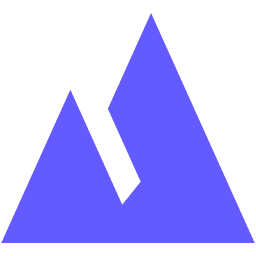

Alex Silachev
I’m Alex Silachev. I run engineering at

Valur,
with a focus on how people and AI build software together. In my spare time I make small,
careful tools for things I like.
Thanos Automa
lets you play Splendor Marvel solo against Thanos,
Board Generator
deals fair boards for CATAN, and
Nord Lane
is a calm, wide theme for Obsidian.
Email me
or find me on GitHub.